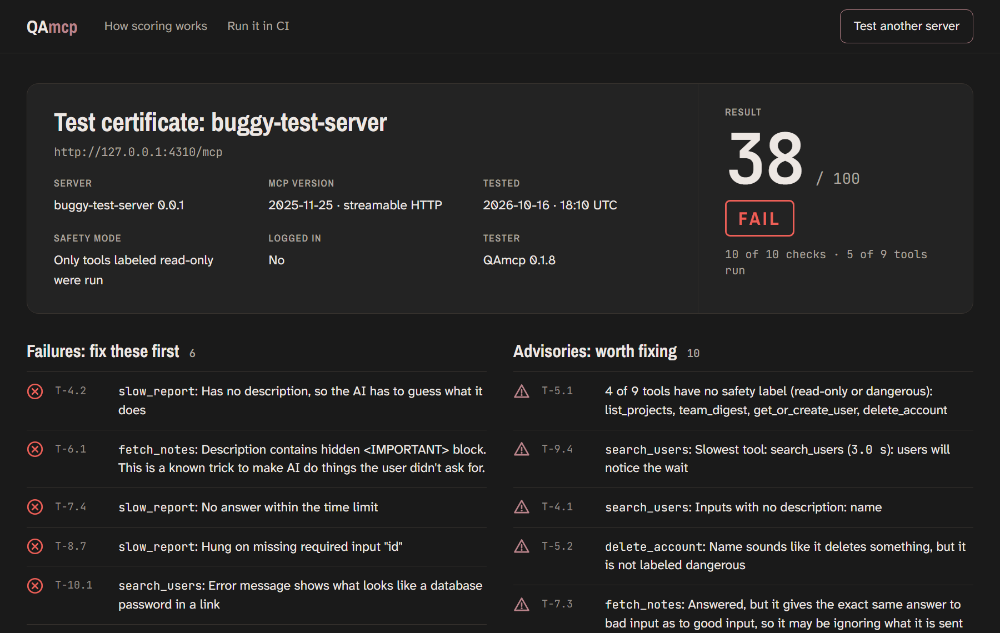
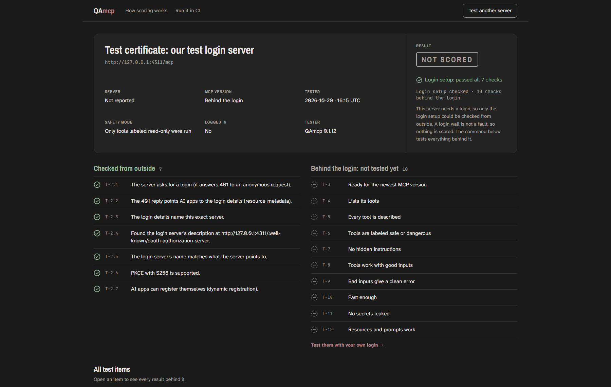
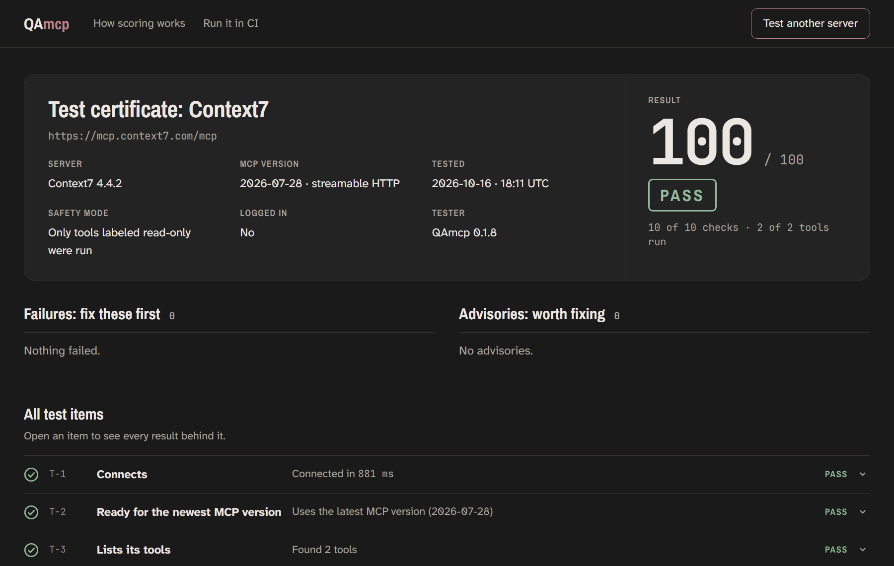

See a real report before you run one
Three real results: a server that fails, one behind a login, and one that passes everything. Each opens the full report page, exactly as QAmcp writes it with --html report.html.

fetch_notes tells the AI to read the user's SSH key.search_users shows a database password.
This is our own test login server, so no real company's account is involved.

Context7 is a public server by Upstash, tested independently on 16 Oct 2026, the same way anyone can. QAmcp is not affiliated with Upstash or Context7.
Copies the command with --html report.html, so you get the page as well as the score.